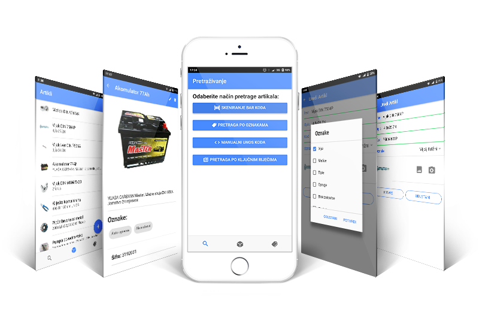

Tagiraj.me
Mobilna aplikacija za označavanje artikala
Preuzimanje
GitHub
Funkcionalnost

Funkcionalnost
Skeniranje bar-koda
Pretraga po oznakama
Manualni unos koda
Pretraga po ključnim riječima
Čitanje NFC oznake
Preuzimanje
Beta v.0.2.0
Alpha v.0.1.0